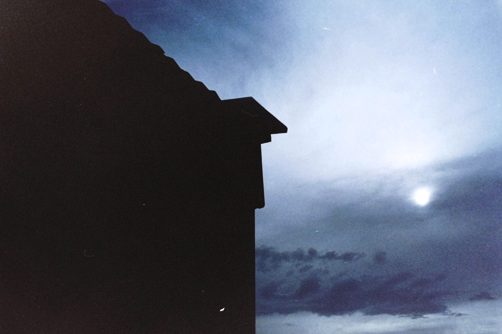
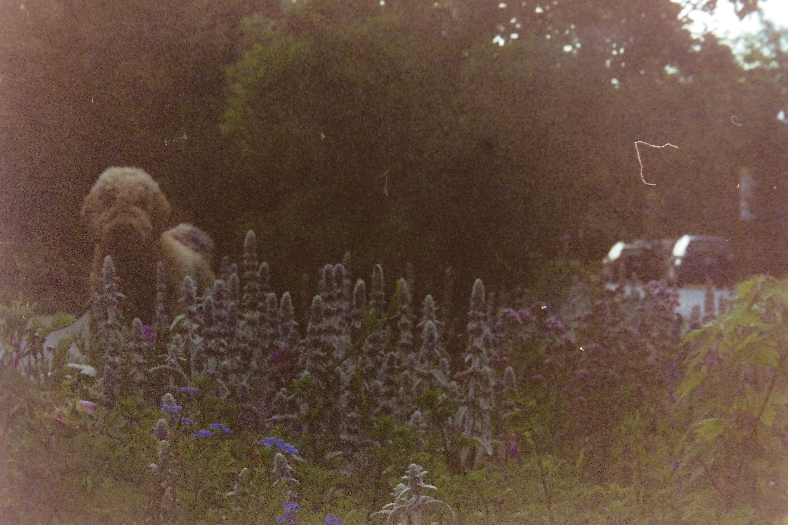
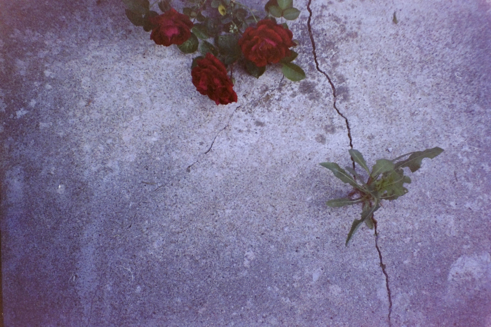
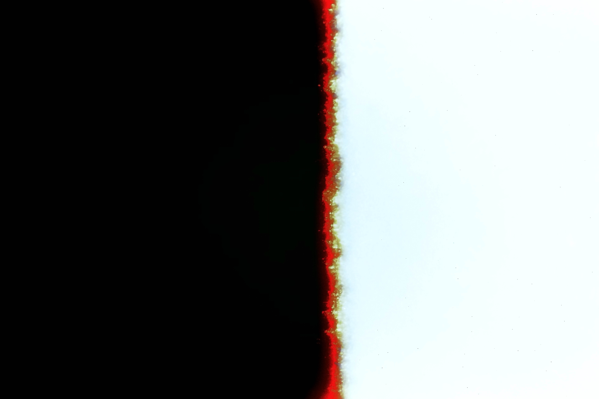
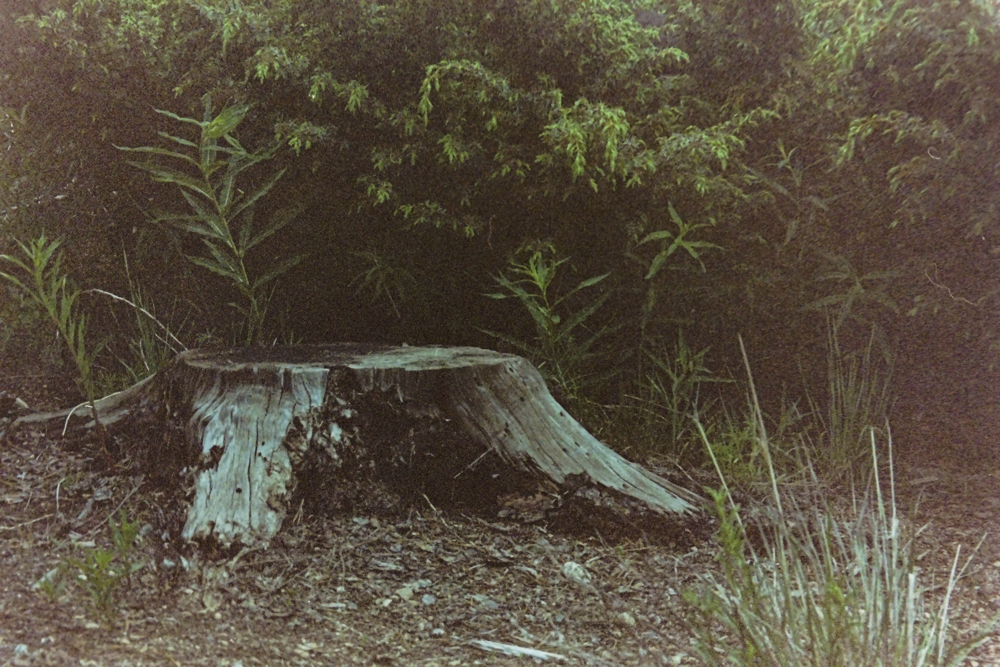

1 / 5

I love how film picks up light. I think that it allows for some gorgeous sillhouettes.
2 / 5

Here's my dog with some flowers. It's a normal photo, but the expired film that I took this image on makes it feel nostalgic and mysterious.
3 / 5

I took this on my back porch. There was a crack in the sidewalk that had collected a weed and a flower. I thought it framed up nicely for a photograph.
4 / 5

This came up at the intersection of the split of the film that was exposed at the beginning of the reel and the film that was not exposed, and it created this dichotomy.
5 / 5

Here's a stump in one of my neighbor's yards. I liked the grass around it.
❮
❯